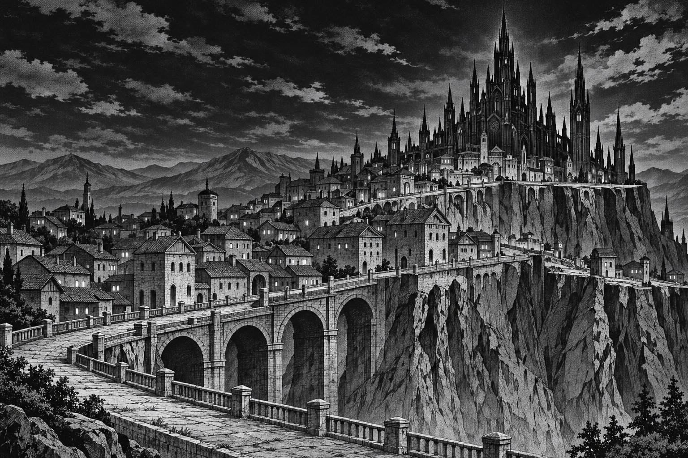

Capítulo 1 · Episódio 1 — O Sonho
1 de 32 quadros deste episódio já têm arte. Os demais mostram a cena do roteiro com os balões na ordem de leitura até a ilustração chegar.
Página 1 de 10

NarraçãoNo continente de Varyn, existe uma fronteira invisível…
Narração…um Limiar que separa o mundo humano do Abismo.
Página 2 de 10
NarraçãoE é sempre no meio dos sonhos…
Narração…que ele me chama.
VozKael…
Página 3 de 10
KaelQuem… quem é você?!
VozO Limiar… está despertando.
VozE você é a Chave.
KaelNÃÃÃO!
Página 4 de 10
HAH! HAH!
KaelDe novo esse sonho… e por que meu rosto tá queimando?
Bram (vindo de baixo)KAEL! O ferro não vai se bater sozinho, moleque!
KaelJá vou, já vou…
Página 5 de 10
KLANG! KLANG!
BramTá batendo torto. Sonhou com aquilo de novo?
KaelUma voz me chamando. Toda noite, Bram. E fica mais perto.
BramJá começou… tão cedo.
BramBobagem. Vai entregar essas facas na praça.
Página 6 de 10
PipKael! Guardei o pão mais torto pra você!
KaelQue honra, Pip.
TUM!
DorianNossa, que cara de defunto. Perdeu pra mim até no sono?
KaelEu nunca perdi pra você, Dorian.
Página 7 de 10
DorianEntão prova.
TAK! TAK! TAK!
Kael…?!
DorianPonto meu. Você tá estranho hoje, hein.
Página 8 de 10
SiennaAtenção! Hoje é noite de Eclipse Rubro. Toque de recolher ao pôr do sol!
DorianE se eu precisar de escolta até em casa, guarda?
SiennaEntão corre.
SiennaEsse garoto… por que senti um arrepio?
Página 9 de 10
DorianDizem que no Eclipse os sonhos ficam reais. Se sonhar comigo, não me conta.
KaelVai pra casa, idiota.
NarraçãoNaquela noite, o céu sangrou.
Página 10 de 10
Voz…Kael…
KaelNão… eu tô acordado!
EcoanteO Limiar… está despertando…
!!